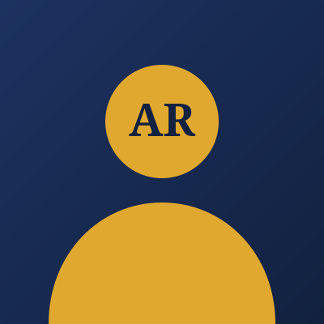

Sobre mí

Quién soy
Soy Antonio Isrrael Rodriguez Carranco, estudiante de Ingeniería en Desarrollo de Software en la Universidad Tecnológica de Santa Catarina y diseñador de sitios web. Trabajo con HTML, CSS y WordPress para crear páginas profesionales para negocios y personas.
Cómo trabajo
Antes de escribir código defino la estructura del sitio y su navegación; después cuido que el diseño sea legible, accesible y coherente en todas las páginas. Me gusta explicar cada decisión para que el cliente entienda qué recibe y por qué.
Conoce mis servicios o lee más sobre HTML en MDN (se abre en una pestaña nueva).